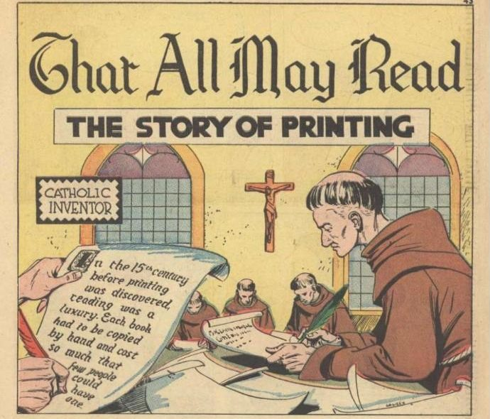

How it works: read the comic pages → answer the question about today's big idea → see what the comic got right and wrong → write 1–2 sentences. Done = all parts green, then turn in at the bottom.
Word help (tap to open)
- Scribe = a person who copies books by hand
- Movable type = small letters that can be moved around and used again and again
- Mold = a hollow shape you pour hot metal into
- Mass production = making lots of the same thing fast
- Mainz (MINES) = Gutenberg's city in Germany
- 1940s comic = made for Catholic schoolkids in the 1940s. It uses some old words and shows one point of view.

Click the page to make it bigger.
Turn in your work
Your work saves on this device, so you can come back later. Your teacher sees it after you turn it in.
Comic: "That All May Read: The Story of Printing," Topix vol. 6 no. 5 (about 1948), Catechetical Guild Educational Society, a comic for Catholic schoolkids. Public domain. Page images from Comic Book Plus (comicbookplus.com). Cropped to today's reading.